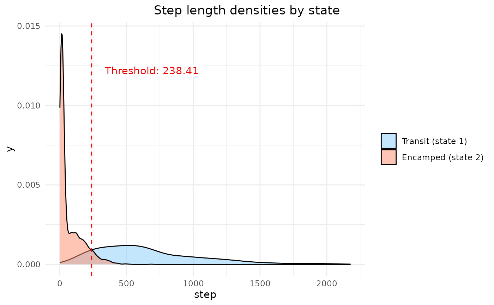
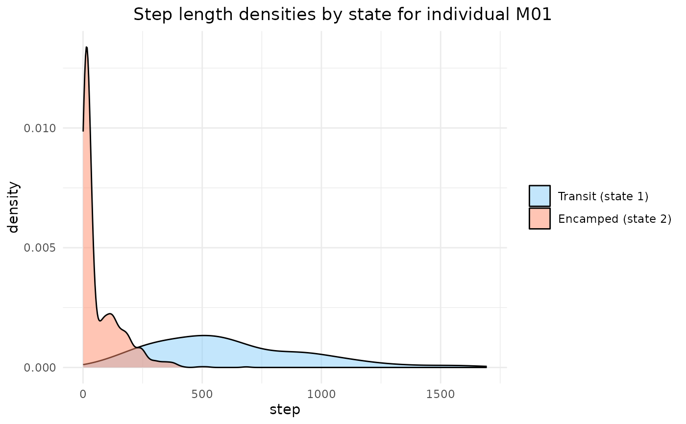

Plot Step Length Densities by Behavioral State
Source:R/draw.step.densities.R
draw.step.densities.RdVisualizes the density distribution of step lengths for different
behavioral states using ggplot2. It can plot the distributions for a
single individual or for the entire dataset, and optionally overlay a calculated
threshold.
Usage
draw.step.densities(
data,
ind = NULL,
ids = NULL,
state.col = "state",
step.col = "step",
threshold = NULL,
...
)Arguments
- data
A data.frame or an object of class
disperseRcontaining movement data.- ind
Character or Numeric. The specific individual ID to plot. If
NULL, densities for all individuals are plotted combined. Default isNULL.- ids
Character. The name of the column containing individual identifiers. Required if
indis provided. Default isNULL.- state.col
Character. The name of the column containing the behavioral states. Default is
"state".- step.col
Character. The name of the column containing the step lengths. Default is
"step".- threshold
Numeric. An optional threshold value (e.g., \(\epsilon\) threshold) to plot as a vertical dashed line. Default is
NULL.- ...
Additional arguments passed to or from other methods.
Examples
eps <- get.epsilon(sim_states)
#> Computing a global threshold using all data combined.
draw.step.densities(sim_states, threshold = eps)
#> Plotting densities for all individuals

draw.step.densities(sim_states, ind = "M01", ids = "ID")
#> Plotting densities for individual M01
#> No threshold provided, plotting only step densities
